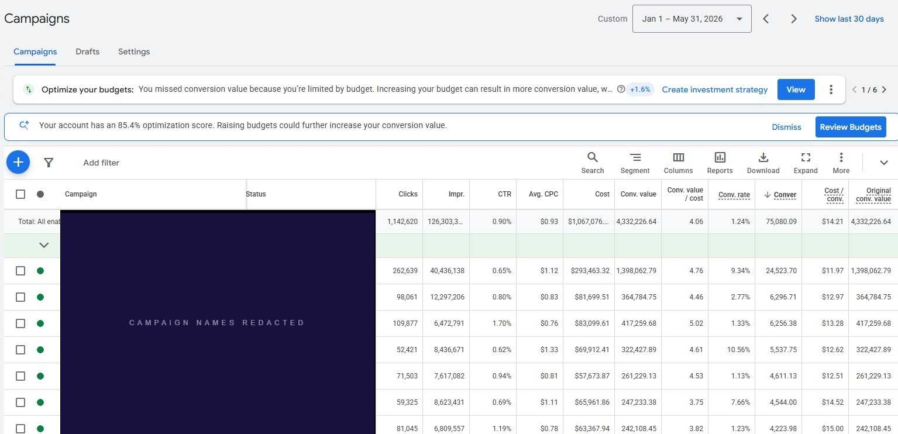

Campaign names withheld per client NDA.
At $1M+ in annual Google Ads spend, the cost of each structural decision scales with it. A targeting inefficiency that costs a smaller account a few hundred dollars a month costs a portfolio like this several thousand.
Seven campaigns served different purposes: brand demand capture, category search, product-line coverage, seasonal, broader acquisition. The account was already producing a strong blended result. The question was whether the portfolio was being managed as a coordinated system or as seven isolated lines held to an identical efficiency expectation.
One ROAS target applied across seven different jobs
Brand Search captures existing demand at high intent. Acquisition reaches new customers at lower intent. Both were held to the same target ROAS. One target across those two jobs obscures the difference and constrains delivery where it shouldn't.
Overlapping query responsibilities across campaigns
Multiple campaigns covered closely related Search demand. When query ownership overlaps, attribution gets murky and budget decisions become harder to evaluate. Which campaign was accountable for which traffic wasn't always clear.
Feed titles written at category level, not SKU level
Several product titles used broad category language or internal catalog terminology. The campaigns were targeting high-intent product queries, but the feed wasn't giving Google the SKU-level attributes needed to match against them: product type, material, color, size, style.
Some bidding targets belonged to an earlier version of the account
Several targets had been set when the account looked different. Campaign structure, conversion behavior, and product mix had all shifted. Stale targets either constrain delivery or permit lower-efficiency volume. Across $1M+ in spend, that compounds.
If you recognized your account in those findings, a diagnostic session surfaces the same structural gaps and gives you a prioritized plan to address them.
Different demand types and different efficiency targets, with no single ROAS benchmark applied across the whole portfolio.
Each campaign was reviewed against its demand type, conversion behavior, and role in the portfolio. Targets held to a single efficiency standard across structurally different campaigns were adjusted. Targets that hadn't changed as the account evolved were reset against current conversion data.
We identified where Search, Shopping, and Performance Max campaigns overlapped on related demand and applied negative keyword, exclusion, and campaign-setting controls. Each campaign got a clear query responsibility. That made budget and attribution decisions straightforward.
Product titles were rewritten around the attributes customers use in Search: product type, material, color, size, style. Internal catalog language was replaced with the terms that match real queries. Visibility on targeted product searches improved once the revised titles were approved.
Budget allocation was reviewed against campaign role, conversion value, efficiency, and available demand. Where the evidence supported a different distribution, allocation was adjusted to better reflect each campaign's contribution to the account.
At $1M+ in spend, one high-performing campaign isn't enough to explain account health. What matters is whether every campaign in the portfolio is pulling its weight across brand, category, product coverage, seasonal, and acquisition.
The 4.06× blended ROAS reflects seven campaigns each held to a different standard. Brand Search ran at 5.02×. The acquisition campaign ran at 3.75×. That gap isn't a problem. Those campaigns have different jobs, and the blended number lands where it does when each is managed to its own role.
At $1.07M in spend across five months, there is no room for ambiguity about which campaign is doing what. The architecture gave the team clear answers about where to allocate the next dollar, which campaigns were competing for the same queries, and which roles were underrepresented. That clarity is the actual deliverable. The 4.06× is what it produced.
You leave with a prioritized plan for your account, yours to keep whether you work with us or not.